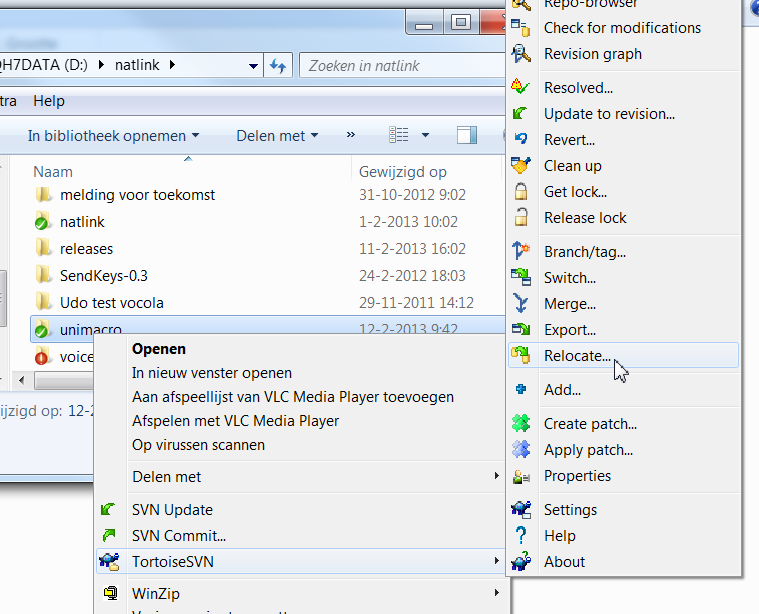
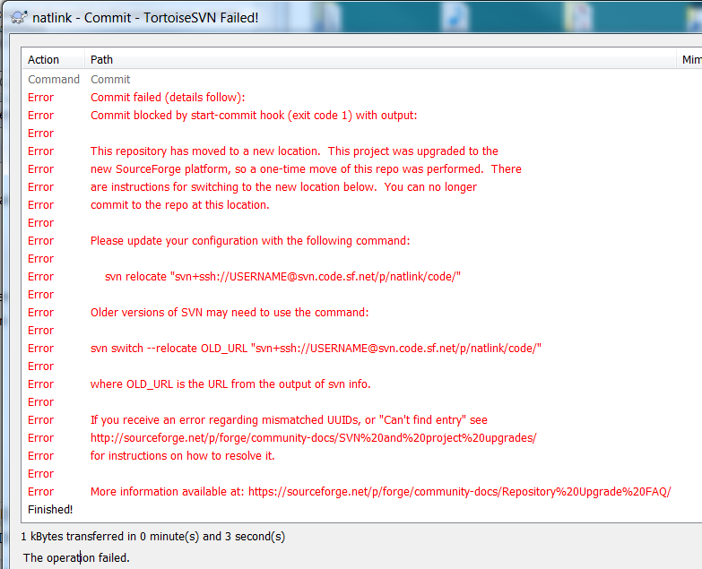
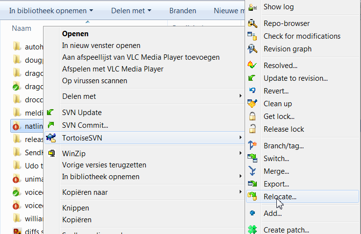
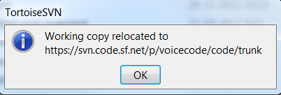
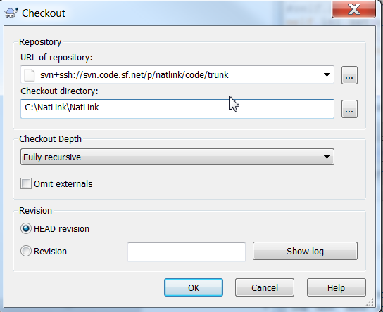
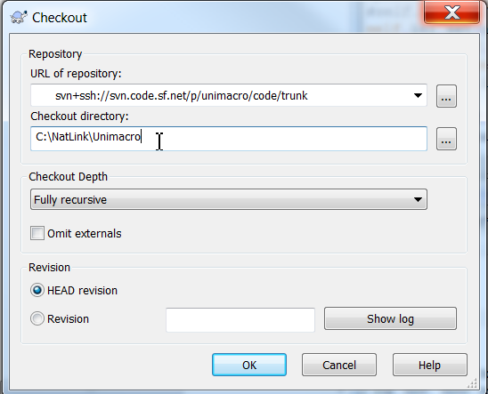
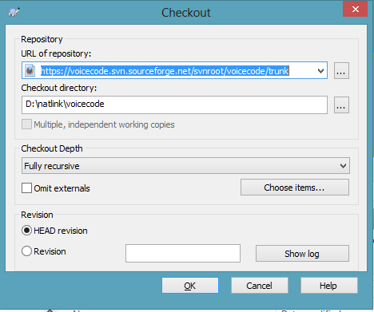
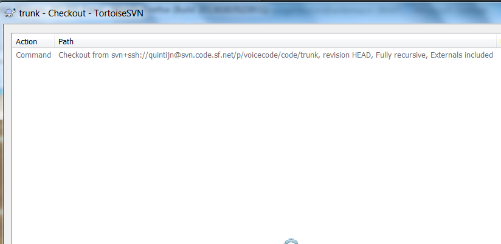
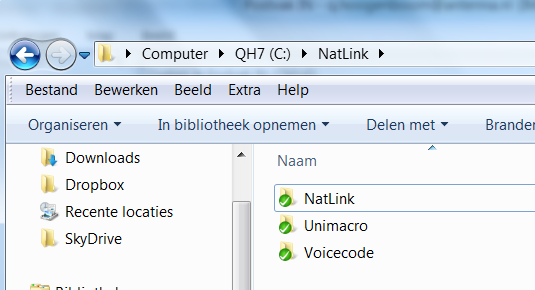

Working with subversion (SVN)
Migration to new repositories
Summary
The new repositories for the projects NatLink, Unimacro and Voicecode are:
- NatLink: https://svn.code.sf.net/p/natlink/code
- Unimacro: https://svn.code.sf.net/p/unimacro/code
- Voicecode: https://svn.code.sf.net/p/voicecode/code
In all three cases you will be prompted for username (sourceforge id) and password. I am not aware of an anonymous login possibility.
Below, first see more detailed instructions on how to change the repository in case you were already on subversion for (some of these) projects.
Then there is more explanation for new subversion users.
Unimacro
Unimacro has on February 12, 2013 been moved to a new location. See new address above and more details below. For those who were on subversion forUnimacro before can simply do a "relocate":

Then enter the new location (please type in, no paste): https://svn.code.sf.net/p/unimacro/code
NatLink
NatLink has been moved to a new location (10 March 2013). Subversion update seems to work as normal, but when you commit things you will get the following message (assuming you use TortoiseSVN):

You can do a simple subversion relocate to:

Then enter the new location (please type in, no paste): https://svn.code.sf.net/p/natlink/code
VoiceCode
The same for voicecode (10 March 2013). Do a subversion relocate, and choose:
https://svn.code.sf.net/p/voicecode/code
When all is succesfull, after having been prompted for your sourceforge password, you will get the following message:

Why and how to work with subversion
If you want more recent versions of files than the latest release, or if you want to contribute to NatLink, possibly Vocola, or Unimacro, you should get your files from SourceForge with subversion.
- First you need a sourceforge id (USERNAME and password), as far as I know no anonymous checkout is possible. Goto sourceforge and click on join top right.
- Then get Tortoise SVN from tigris tortoisesvn.
- Now remove the subdirectories of Unimacro and NatLink (in case of getting both with SVN) or either one of them. Leaving you in C:\NatLink. (Another starting point, like D:\NatLink is also possible and even recommended.)
These were the preliminaries. Now proceed: - So now assume the root of NatLink is in C:\NatLink. And you have removed one or both subdirectories NatLink and Unimacro.
NatLink
- For NatLink: right click on C:\NatLink and choose SVN checkout.
- Fill in for URL of repository (please type in, no paste): https://svn.code.sf.net/p/natlink/code
- choose for checkout directory C:\NatLink\NatLink
- you are probably prompted twice for loging (sourceforge id) and password

Unimacro- For Unimacro: also right click on C:\NatLink and choose SVN checkout:
- Fill in as repository (please type in, no paste): https://svn.code.sf.net/p/unimacro/code,
- choose as checkout directory C:\NatLink\Unimacro,
- you are probably prompted twice for loging (sourceforge id) and password

Voicecode- Similar actions are needed to get Voicecode: right click on C:\NatLink and choose SVN checkout:
- Fill in as repository (please type in, no paste): https://svn.code.sf.net/p/voicecode/code,
- choose as checkout directory C:\NatLink\Voicecode,
- you are probably prompted twice for loging (sourceforge id) and password

Note: checking out Voicecode takes quite some time, you will be seeing the following for some time:

Directory layout
After checking out NatLink (which includes Vocola), Unimacro and Voicecode (only for voice coders), you will see the following directory layout:

Vocola:
Note the Vocola files are in the NatLink repository.
Update
For updating you can right click on one of the folders and choose SVN update. You should do a separate Update for each of the three folders (if you checked them out).
Contribute: Commit
If you want to commit changes (contribute to one of the projects):
- You probably are registered at SourceForge.net by now,
- You need to get permission from one of the repository administrators to do so. Mail to Quintijn, see email link at the bottom of this page.
If that has been done, you can also commit
changes by right clicking on the correct folder and choose commit. Your password for SourceForge will be asked once.
How to find configurenatlink.py or natlinkconfigfunctions.py
In case you checked out things in different folders, or didn't install the .exe installer before you took above steps, you will have to find the configure GUI or the configure command line interface in the Windows explorer.
Go to C:\NatLink\NatLink\confignatlinkvocolaunimacro.
- With the python file start_configurenatlink.py you can start the config program, in "elevated" mode. Just run this python file
- With the file start_natlinkconfigfunctions.py you start the command line interface, also in elevated mode. (See instructions on natlinkconfigfunctions.
|